WACV 2026 LENS Workshop · Tucson, Arizona · Mar 6–10, 2026
Learning Domain Agnostic Latent Embeddings of 3D Faces for Zero-shot Animal Expression Transfer
Yue Wang1, Lawrence Amadi2, Xiang Gao1, Yazheng Chen1, Yuanpeng Liu1, Ning Lu2, and Xianfeng David Gu1
1Stony Brook University · 2FutureWei Technologies
Abstract
We propose a framework for zero-shot cross-species expression transfer on 3D face meshes. By learning domain-agnostic latent embeddings that disentangle identity and expression using intrinsic geometric descriptors (HKS and WKS), the model generalizes at inference time to animal meshes — including felines, dogs, and hippos — without any animal supervision during training. The approach is invariant to global translation, rotation, and scale, eliminating the need for pre-alignment or canonical template normalization.
Results
The model trained solely on human face data successfully transfers diverse expressions to unseen animal meshes at inference time — zero-shot, with no animal supervision.
Zero-shot dog and hippo expression transfer
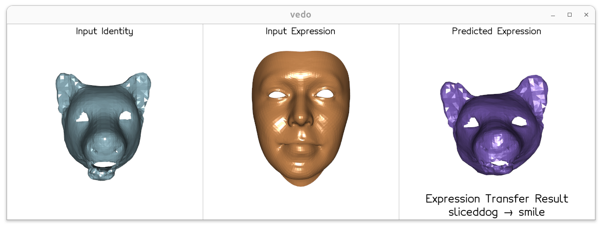
sliceddog → smile
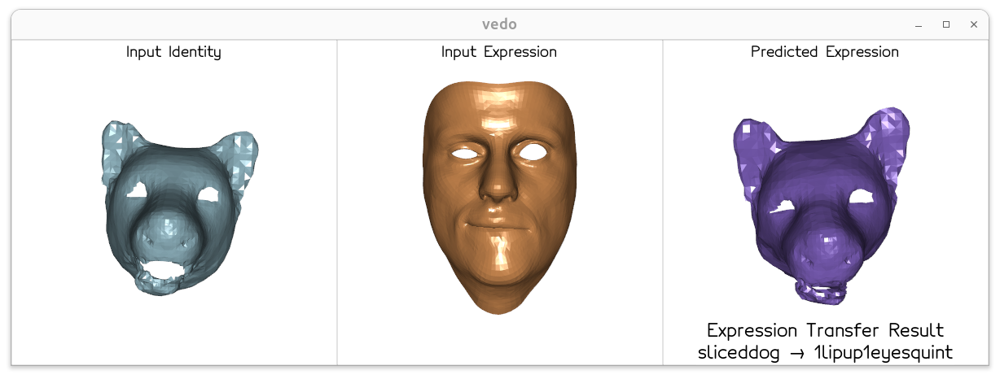
sliceddog → 1lipup1eyesquint
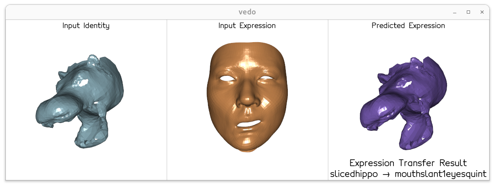
slicedhippo → mouthslant1eyesquint
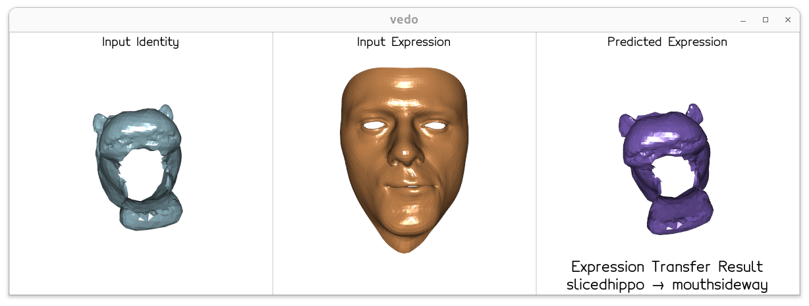
slicedhippo → mouthsideway
Cross-species expression transfer grid
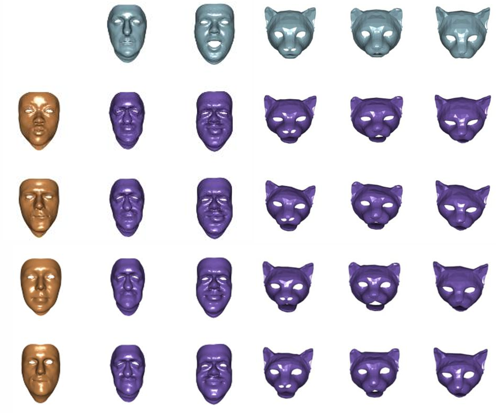
Top row: 5 different identities including humans and felines. Left column: 4 human expression inputs. Grid: predicted expression for each identity–expression pair.
Failure cases
Limitation: Some expressions, such as eye or mouth closing, are challenging to transfer to animal faces due to large morphological differences between human and animal facial anatomy in those regions. The model struggles most when the target species lacks the anatomical structures needed to reproduce a given expression.
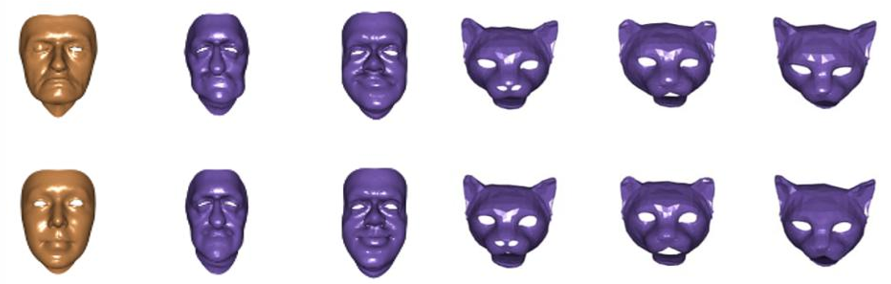
Examples where expression transfer fails to capture the intended expression
See also: Method and Latent space analysis below for more details on how these results are achieved.
Motivation
Cross-species gap
- Human facial animation is well-developed, but extending it to non-human characters remains challenging due to morphological differences
- Collecting paired animal expression data is costly or infeasible for many species
Limitations of prior work
- Typical human expression transfer methods rely on shared topology or extensive labels
- They don't generalize to animals out of the box
- Our method requires zero animal supervision at training time
Method
The framework has a single training stage on human face data, after which the learned model is directly applied to animal meshes at inference time without any additional training or fine-tuning.
Training: Learning domain-agnostic latent embeddings
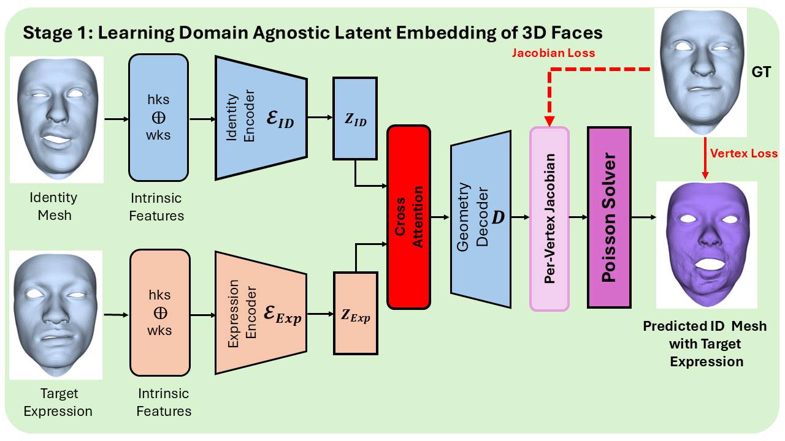
The model is trained on human face triplets. Identity and expression encoders produce disentangled latents zID and zExp, fused via cross-attention into a geometry decoder supervised by Jacobian and vertex losses.
Inference: Zero-shot human-to-animal expression transfer
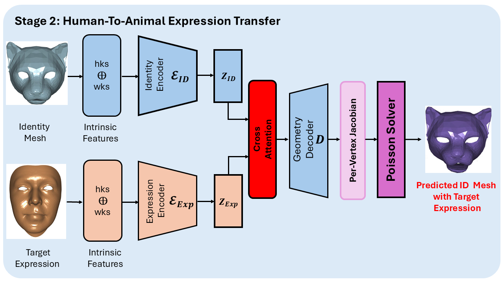
At inference time, the trained model is directly applied to unseen animal identity meshes. No additional training, fine-tuning, or animal data is used — this is purely zero-shot evaluation.
Key components
Geometry
- Intrinsic descriptors: HKS and WKS
- Invariant to rigid transformations
- Neural Jacobian Field decoder
- Poisson solver for mesh reconstruction
Learning
- DiffusionNet encoder for each branch
- Cross-attention latent fusion
- Mesh-agnostic inputs
- Vertex loss + Jacobian loss
Dataset
Training — human faces
- 1,000 synthesized mesh triplets (Mid, Mexp, Mgt) from the ICT Face Model
- Identity mesh may have a non-neutral expression
Inference — animal meshes
- Felines from CAFM (WACV Workshops 2020)
- Dogs and hippos from SMAL (CVPR 2017)
- Zero animal supervision used at any point
Latent Space Analysis
t-SNE visualization shows the ID encoder produces well-separated clusters per identity, while the expression encoder captures meaningful structure across 50 expression categories.
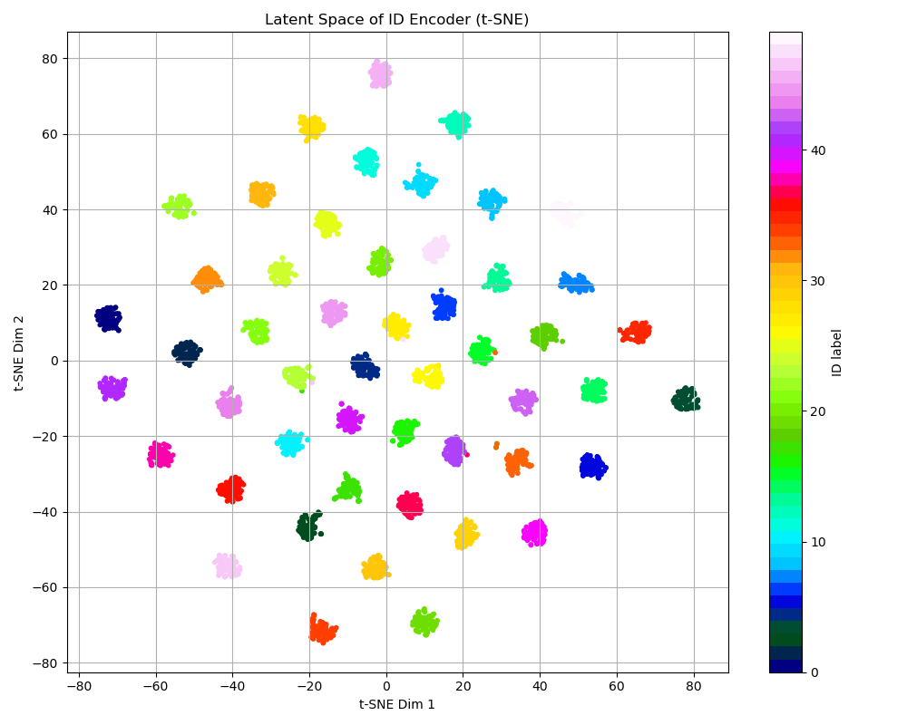
ID encoder latent space — each color is a different identity
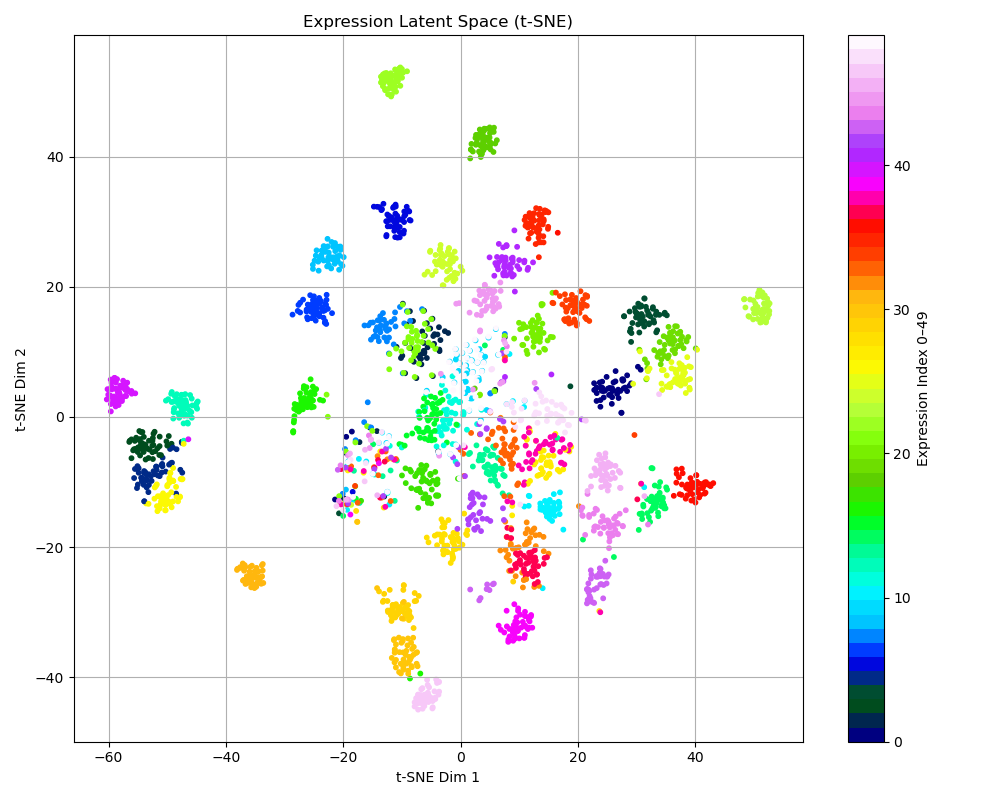
Expression encoder latent space — each color is a different expression
Closest neighbors in latent space
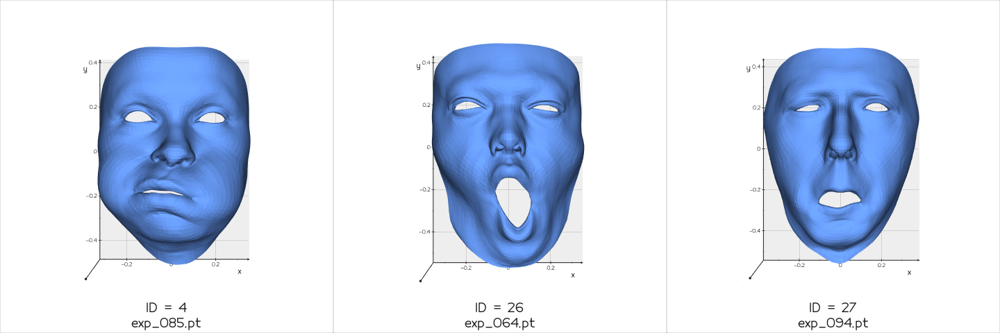
Closest 3 faces in the ID latent space
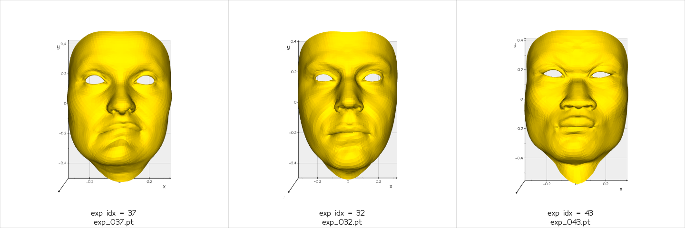
Closest 3 faces in the expression latent space
Furthest neighbors in latent space
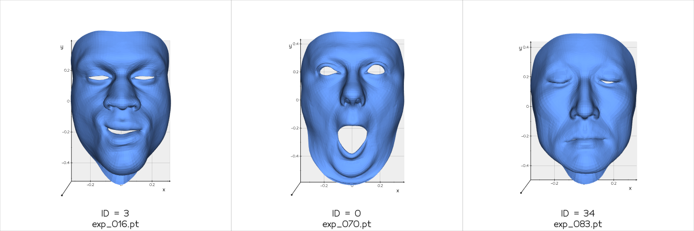
Furthest 3 faces in the ID latent space
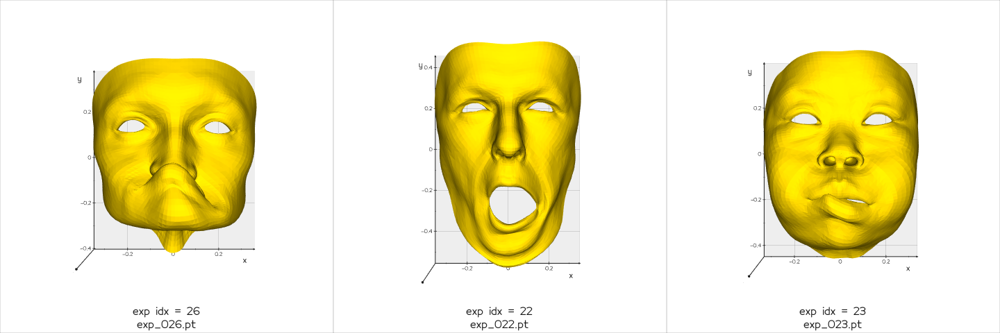
Furthest 3 faces in the expression latent space
Future Directions
Richer training data
Train on larger, more diverse datasets (e.g., MultiFace) for better generalization across identities and expressions.
Richer supervision
Add semantic or muscle-based supervision to improve realism and anatomical plausibility.
Dynamic sequences
Extend to temporal sequences and real-time applications in VR, AR, and animation pipelines.
More species
Expand zero-shot transfer to a wider variety of animal species with larger morphological differences.
Citation
If you find this work useful, please cite:
@inproceedings{wang2026domain,
title = {Learning Domain Agnostic Latent Embeddings of 3D Faces
for Zero-shot Animal Expression Transfer},
author = {Wang, Yue and Amadi, Lawrence and Gao, Xiang and
Chen, Yazheng and Liu, Yuanpeng and Lu, Ning and
Gu, Xianfeng David},
booktitle = {Proceedings of the IEEE/CVF Winter Conference on
Applications of Computer Vision (WACV) Workshops},
year = {2026}
}